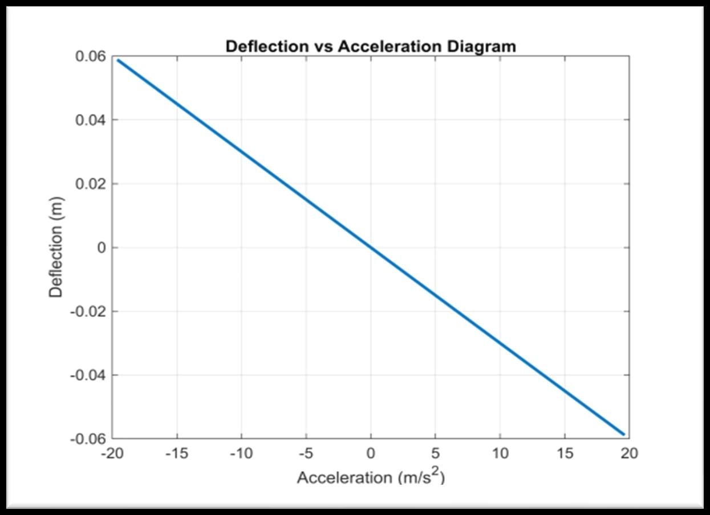

Mechanical Accelerometer MATLAB Simulation
Summary
What
MATLAB simulation of a spring-mass mechanical accelerometer that shows how mass deflection responds to acceleration.
Role
Derived a spring-mass model from Hooke's law and Newton's second law and simulated deflection over plus and minus 2 g in MATLAB, in a team of 4.
Results
- Spring-mass model simulated over plus and minus 2 g, minus 19.6 to 19.6 m/s2, with 100 points.
- Deflection is linear in acceleration.
- The slope, or sensitivity, rises with mass and falls with spring constant.


Problem
Design a mechanical accelerometer for measuring acceleration in the range of 2 g and show its response in MATLAB.
Method
- Combined Hooke's law and Newton's second law for a mass on a spring.
- MATLAB code computes deflection for 100 linearly spaced accelerations from minus 2 g to 2 g.
- Discussed the effect of mass, spring constant and damping on sensitivity and response.
Equations
- EQ. 1
F = m a = -k x - EQ. 2
x = -m a / k
Results
Deflection against acceleration is a straight line over minus 19.6 to 19.6 m/s2. A higher mass or a lower spring constant gives a steeper slope and greater sensitivity.
Limitations
- Linear model only. Non-linear effects and damping are not modelled.
- No experimental validation. A physical prototype is future work.
- The mass and spring constant values are not given in the report text.
Tools
- MATLAB